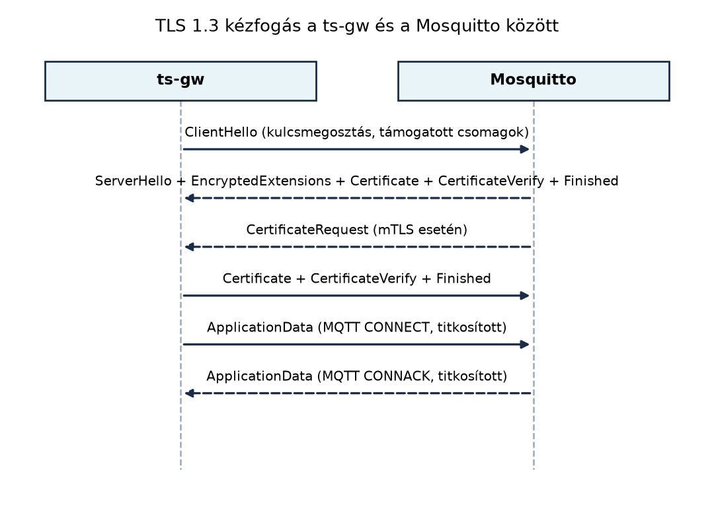

A TerraSense jelenleg nyílt, hitelesítés nélküli MQTT-kapcsolatot
használ: a ts-node, a ts-gw és a
ts-backend az MQTT a gyakorlatban
alfejezetben felépített módon a broker 1883-as portján, felhasználónév
és titkosítás nélkül kommunikál. Ez egy valós telepítésen két azonnali
problémát jelent:
A Kriptográfiai alapok fejlesztőknek és az Eszközidentitás: X.509-tanúsítványok, PKI és
kulcstárolás alfejezetben felépítettük a TerraSense kétszintű, ECDSA
P-256 kulcsokra épülő labor-PKI-jét: a gyökér CA-t
(ca/root-ca.crt), a köztes CA-t
(ca/intermediate-ca.crt), a broker szervertanúsítványát
(certs/server.crt) és a ts-node
eszköztanúsítványát (certs/device-001.crt). Ebben az
alfejezetben erre a PKI-re építve állítjuk át a teljes MQTT-láncot
kölcsönös TLS-hitelesítésre (mutual TLS, mTLS): a ts-gw és
a ts-backend tanúsítvány alapján azonosítja magát, a
Mosquitto pedig a tanúsítvány identitásához köti a topic-szintű
jogosultságokat. Nem hozunk létre új CA-t: a tanúsítványokat továbbra is
az Eszközidentitás: X.509-tanúsítványok, PKI és
kulcstárolás alfejezetben létrehozott köztes CA írja alá, így a
lánc, a fájlnevek és az identitások az egész könyvben egységesek
maradnak.
A cél nem csupán a titkosítás, hanem az eszközidentitás kialakítása, amelyet a későbbi provisioning és onboarding, valamint a záróprojekt közvetlenül felhasznál.
Definíció. A Transport Layer Security (TLS) egy olyan kriptográfiai protokoll, amely megbízható átviteli réteg (általában TCP) fölött biztosít titkosságot, integritást és hitelesítést. A TLS 1.3-at az RFC 8446 definiálja. A kölcsönös TLS (mutual TLS, mTLS) a TLS olyan változata, amelyben nemcsak a szerver, hanem a kliens is tanúsítvánnyal igazolja magát; a kliens oldali tanúsítványt a szerver ugyanazzal a láncvalidálással ellenőrzi, mint a szerver tanúsítványát a kliens.
Definíció. A tanúsítvány-ellenőrzés során a fogadó fél a bemutatott X.509-tanúsítványt a következők szerint validálja: a tanúsítvány aláírása láncolatban visszavezethető egy megbízható gyökértanúsítványhoz (CA), a tanúsítvány érvényességi ideje aktuális, a tanúsítványban szereplő név megegyezik a kapcsolódási céllal (hosztnév vagy identitás), a tanúsítvány rendeltetése (a kiterjesztett kulcshasználat, EKU) illeszkedik a használathoz, és a tanúsítványt nem vonták vissza. Ha bármelyik ellenőrzés sikertelen, a kézfogás megszakad.
A TLS 1.3 kézfogás rövidebb, mint a korábbi 1.2-es változaté, mert a
kliens az első üzenetben elküldi a kulcsmegosztási paramétereit, és a
szerver egyetlen lépésben válaszol a saját kulcsmegosztásával és
tanúsítványláncával. Üzenetsorrend-diagramon ez a következőképpen néz ki
a ts-gw és a Mosquitto között:

A kézfogás során a szerver a CertificateRequest
üzenettel kéri a kliens tanúsítványát. A ts-gw a saját
tanúsítványát és a hozzá tartozó privát kulcs aláírását küldi el a
CertificateVerify üzenetben, ezzel bizonyítja, hogy a
privát kulcs birtokában van. A Finished üzenetek után
minden adat, beleértve az MQTT CONNECT és
PUBLISH csomagokat is, titkosított rekordokban halad.
A mTLS nem csupán hitelesítésre alkalmas: a Mosquitto a bemutatott
kliens tanúsítvány Common Name (CN) mezőjét felhasználhatja
a topic-szintű jogosultságok (ACL) eldöntésére. A
use_identity_as_username true beállítás hatására a broker a
kliens tanúsítványának CN-jét használja felhasználónévként, így az
ACL-fájl user sorai a tanúsítvány identitására
illeszkednek. A TerraSense-ben a CN site-hoz kötött identitás:
| Szolgáltatás | Tanúsítvány CN-je | Szerep |
|---|---|---|
ts-gw (gh1 gateway) |
gw.gh1.terrasense |
a gh1 node-jainak telemetriája, állapota és státusza; parancsok olvasása és eredményük írása |
ts-backend |
backend.terrasense |
minden site adatának olvasása; parancsok kiadása |
ts-node (n001) |
n001.gh1.terrasense |
eszköztanúsítvány a gateway felé; a broker felé a gateway közvetít |
A Subject Alternative Name (SAN) ezzel szemben a
hosztnév-ellenőrzéshez kell: a szervertanúsítvány SAN-ja
DNS:localhost és IP:127.0.0.1, ezért a
kliensek localhost néven ellenőrzik a brokert. Az ACL-hez
nem a SAN-t, hanem a CN-t használjuk, mert a SAN kliens oldali
tanúsítványnál nem kötelező, a CN viszont a TerraSense identitás
hordozója. A %u helyettesítő a Mosquitto ACL-fájlban a
felhasználónevet (tehát itt a CN-t) jelentené, a TerraSense ACL mégis
explicit site-mintákat használ, mert így a jogosultságok site-onként
olvashatók és auditálhatók.
A TLS feltételezi a megbízható TCP-átvitelt. Azokon a korlátos
eszközökön, amelyek UDP-alapú CoAP-ot használnak, a Datagram TLS
(DTLS) biztosít hasonló védelmet. A DTLS a TLS kézfogást
datagram-alapú átvitelre adaptálja: újraküldési időzítőkkel,
sorrendszámokkal és datagram-újraösszeállítással kezeli a csomagvesztést
és a duplikációt. A DTLS 1.3 az RFC 9147-ben, a DTLS 1.2 az RFC 6347-ben
van meghatározva. A ts-node opcionális CoAP-alapú
konfigurációjában DTLS-t használhatnánk, de a jelen labor az MQTT
mTLS-re összpontosít, mert a TerraSense elsődleges kommunikációs lánca
MQTT-alapú.
Erőforrásigény. A TLS 1.3 kézfogás jellemzően néhány
kilobájtnyi adatforgalmat jelent, és a modern mikrokontrollereken a
kriptográfiai műveletek hardveres gyorsítással vagy szoftveres
megvalósítással elvégezhetők. A native_sim környezetben nem
mérünk valós fogyasztást; a tényleges eszközön a TLS-kézfogás
energiaköltsége a kézfogások gyakoriságának csökkentésével (hosszú
munkamenet, session resumption) optimalizálható.
| Szempont | Titkosítatlan MQTT | Szerveroldali TLS | mTLS |
|---|---|---|---|
| Kliens hitelesítése | nincs | felhasználónév/jelszó vagy nincs | tanúsítvány, erős identitás |
| Topic-szintű ACL alapja | IP vagy felhasználónév | felhasználónév | tanúsítvány CN/SAN |
| Kulcskezelés bonyolultsága | nincs | szerver oldali | minden eszköznek saját kulcs és tanúsítvány |
| Javasolt alkalmazás | fejlesztői teszt | kísérleti rendszer, belső hálózat | termelési TerraSense |
A TerraSense termelési célja egyértelműen az mTLS. A nyílt portot a
laborban lezárjuk, hogy véletlenül se maradjon hitelesítetlen belépési
pont. A ts-node eszközökön opcionálisan szintén bevezethető
az mTLS, de a nagyon korlátos hardveren a DTLS vagy a szimmetrikus
kulcsos hitelesítés megfontolható; ezt a provisioning témakörében vizsgáljuk tovább.
Munkakönyvtár: ~/iot-labor/i057
A labor négy fő lépésből áll: az Eszközidentitás:
X.509-tanúsítványok, PKI és kulcstárolás alfejezetben létrehozott
PKI kiegészítése a gateway- és backend-tanúsítvánnyal, a visszavonási
lista előkészítése, a Mosquitto konfigurációjának átállítása mTLS-re,
majd a ts-gw (Paho C++ 1.3.2) és a ts-backend
(Paho MQTT 5 Java kliens) kliensoldali beállítása. A tanúsítványokat nem
hozzuk létre újra: a gyökér- és köztes CA, valamint a szervertanúsítvány
az Eszközidentitás: X.509-tanúsítványok, PKI és
kulcstárolás laborból származik.
Először ellenőrizzük, hogy az Eszközidentitás: X.509-tanúsítványok, PKI és kulcstárolás PKI-ja rendelkezésre áll. Ha a gyökér vagy a köztes CA hiányzik, előbb az Eszközidentitás: X.509-tanúsítványok, PKI és kulcstárolás 1–2. lépését kell újrafuttatni.
mkdir -p ~/iot-labor/i057 && cd ~/iot-labor/i057
umask 077
test -r "$HOME/iot-labor/i056/ca/root-ca.crt"
test -r "$HOME/iot-labor/i056/ca/intermediate-ca.crt"
test -r "$HOME/iot-labor/i056/certs/server-chain.pem"
test -r "$HOME/iot-labor/i056/certs/server.key"A ts-gw tanúsítványa az Eszközidentitás: X.509-tanúsítványok, PKI és
kulcstárolás (c) feladatából származik. Ha a gyakorlatot még nem
végeztük el, a következő blokk létrehozza; ha már megvan, a fájlok
érintetlenül maradnak.
cd "$HOME/iot-labor/i056"
if [ ! -r certs/gw-chain.pem ]; then
cat > certs/gw.ext <<'EOF'
[v3_client]
basicConstraints = critical,CA:FALSE
keyUsage = critical,digitalSignature
extendedKeyUsage = clientAuth
EOF
openssl ecparam -genkey -name prime256v1 -out certs/gw.key
openssl req -new -key certs/gw.key \
-subj "/C=HU/O=TerraSense Lab/CN=gw.gh1.terrasense" \
-out certs/gw.csr
openssl x509 -req -in certs/gw.csr \
-CA ca/intermediate-ca.crt -CAkey ca/intermediate-ca.key -CAcreateserial \
-days 825 -sha256 \
-extfile certs/gw.ext -extensions v3_client \
-out certs/gw.crt
cat certs/gw.crt ca/intermediate-ca.crt > certs/gw-chain.pem
fiA ts-backend tanúsítványa új: a CN
backend.terrasense, az EKU clientAuth. A
köztes CA-val írjuk alá, és a láncfájlba a végponti tanúsítvány mellé a
köztes CA kerül.
cd "$HOME/iot-labor/i056"
cat > certs/backend.ext <<'EOF'
[v3_client]
basicConstraints = critical,CA:FALSE
keyUsage = critical,digitalSignature
extendedKeyUsage = clientAuth
EOF
openssl ecparam -genkey -name prime256v1 -out certs/backend.key
openssl req -new -key certs/backend.key \
-subj "/C=HU/O=TerraSense Lab/CN=backend.terrasense" \
-out certs/backend.csr
openssl x509 -req -in certs/backend.csr \
-CA ca/intermediate-ca.crt -CAkey ca/intermediate-ca.key -CAcreateserial \
-days 825 -sha256 \
-extfile certs/backend.ext -extensions v3_client \
-out certs/backend.crt
cat certs/backend.crt ca/intermediate-ca.crt > certs/backend-chain.pemA láncokat a gyökér CA-val ellenőrizzük; a köztes CA-t
-untrusted opcióval adjuk meg, mert nem trust anchor, csak
a lánc része.
cd "$HOME/iot-labor/i056"
openssl verify -CAfile ca/root-ca.crt -untrusted ca/intermediate-ca.crt \
certs/server.crt certs/gw.crt certs/backend.crt
openssl x509 -in certs/backend.crt -noout -subject -issuer -ext extendedKeyUsage
stat -c '%a %n' ca/*.key certs/server.key certs/gw.key certs/backend.keyA várt kimenet (illusztratív):
certs/server.crt: OK
certs/gw.crt: OK
certs/backend.crt: OK
subject=C = HU, O = TerraSense Lab, CN = backend.terrasense
issuer=C = HU, O = TerraSense Lab, CN = TerraSense Intermediate CA
X509v3 Extended Key Usage: TLS Web Client Authentication
600 ca/intermediate-ca.key
600 ca/root-ca.key
600 certs/backend.key
600 certs/gw.key
600 certs/server.keyA 600-as jogosultság és az umask 077 együtt
biztosítja, hogy a privát kulcsok csak a tulajdonos számára legyenek
olvashatók. A CA privát kulcsait egyetlen szolgáltatáskonténerbe sem
csatoljuk.
A tanúsítvány visszavonása nem történik meg automatikusan attól, hogy
a fájlt töröljük, vagy megvárjuk a lejáratát. A broker csak akkor
utasítja el a visszavont klienst, ha visszavonási listát
(CRL) tölt be és ellenőriz. A CRL-t a köztes CA írja alá. A
Mosquitto 2.0.x crlfile direktívája
X509_load_crl_file és X509_V_FLAG_CRL_CHECK
beállítással dolgozik; ha a fájl nem olvasható, a broker el sem indul
(fail-closed). A CRL frissítése nem automatikus: újragenerálás után a
brokert újra kell indítani.
A CRL-generáláshoz az openssl ca parancsnak szüksége van
egy adatbázisra és egy konfigurációs fájlra. Ezeket az Eszközidentitás: X.509-tanúsítványok, PKI és
kulcstárolás CA-könyvtárában hozzuk létre.
cd "$HOME/iot-labor/i056"
cat > ca/intermediate-ca.cnf <<'EOF'
[ca]
default_ca = intermediate_ca
[intermediate_ca]
database = ca/index.txt
serial = ca/serial
crlnumber = ca/crlnumber
private_key = ca/intermediate-ca.key
certificate = ca/intermediate-ca.crt
default_md = sha256
default_crl_days = 30
policy = policy_anything
[policy_anything]
commonName = optional
countryName = optional
organizationName = optional
EOF
touch ca/index.txt
test -f ca/serial || printf '1000\n' > ca/serial
test -f ca/crlnumber || printf '1000\n' > ca/crlnumber
openssl ca -config ca/intermediate-ca.cnf -gencrl -out ca/intermediate-ca.crl
openssl crl -in ca/intermediate-ca.crl -noout -issuer -lastupdate -nextupdateA várt kimenet (illusztratív; a dátumok a futtatás napjától függnek):
issuer=C = HU, O = TerraSense Lab, CN = TerraSense Intermediate CA
lastUpdate=Oct 31 10:00:00 2026 GMT
nextUpdate=Nov 30 10:00:00 2026 GMTA default_crl_days 30 azt jelenti, hogy a lista 30 napig
érvényes. Ha lejár, az OpenSSL CRL-ellenőrzés
CRL has expired hibát ad, és a broker a klienseket sem
engedi be; ez szándékos fail-closed viselkedés. Éles rendszerben a CRL-t
a nextUpdate előtt újra kell generálni, vagy rövid
élettartamú tanúsítványokkal és OCSP staplinggel kell kiváltani. A labor
nem használ OCSP-t, mert a ts-node és a gateway időnként
offline lehet, és a folyamatos OCSP-kapcsolat nem garantálható.
A korábbi stack/mosquitto/mosquitto.conf fájlt
módosítjuk. A titkosítatlan listener 1883 sort eltávolítjuk
vagy kommenteljük, és beállítjuk a TLS-listener-t. Az ACL-fájlt külön
hozzuk létre.
Először az ACL-fájl. A use_identity_as_username true
miatt a user sorokban a tanúsítványok CN-je szerepel. A gh1
gateway a saját site-ja node-jainak telemetriáját, állapotát és
státuszát írja, a parancsokat olvassa, azok eredményét pedig írja;
parancsot nem adhat ki. A backend minden site adatát olvassa, és egyedül
ő írhat parancsot.
# ~/iot-labor/stack/mosquitto/acl.conf
# A use_identity_as_username miatt a "user" a kliens tanúsítványának CN-je.
# gh1 gateway: a saját site-ja node-jainak adatait írja, a parancsokat olvassa.
user gw.gh1.terrasense
topic write terrasense/gh1/+/telemetry
topic write terrasense/gh1/+/state
topic write terrasense/gh1/+/status
topic read terrasense/gh1/+/cmd
topic write terrasense/gh1/+/cmd/result
# backend: minden site adatát olvassa, parancsot csak ő írhat.
user backend.terrasense
topic read terrasense/+/+/telemetry
topic read terrasense/+/+/state
topic read terrasense/+/+/status
topic read terrasense/+/+/cmd/result
topic write terrasense/+/+/cmdA Mosquitto konfigurációja a
stack/mosquitto/mosquitto.conf fájlban:
# ~/iot-labor/stack/mosquitto/mosquitto.conf
per_listener_settings true
listener 8883
protocol mqtt
tls_version tlsv1.3
cafile /mosquitto/certs/root-ca.crt
certfile /mosquitto/certs/server-chain.pem
keyfile /mosquitto/certs/server.key
crlfile /mosquitto/certs/intermediate-ca.crl
require_certificate true
use_identity_as_username true
acl_file /mosquitto/acl.confA per_listener_settings true beállítás biztosítja, hogy
az esetleges további listener-ek ne örököljék automatikusan a
TLS-beállításokat. A require_certificate true kötelezővé
teszi a kliens tanúsítványt. A
use_identity_as_username true hatására a broker a kliens
tanúsítvány CN-jét használja felhasználónévként, így az ACL-fájl
user gw.gh1.terrasense és
user backend.terrasense sorai érvényesülnek. A
tls_version tlsv1.3 a TLS 1.3-at írja elő; a TLS 1.2-es
kézfogást a broker elutasítja. A certfile a szerverláncot
(server-chain.pem) tartalmazza, hogy a broker a végponti
tanúsítvány mellett a köztes CA-t is elküldje; a cafile
csak a gyökér CA-t tartalmazza, mert a kliensek a saját láncukban küldik
a köztes CA-t. A crlfile a köztes CA által aláírt
visszavonási lista.
A stack/compose.yaml lab-broker
szolgáltatásában a következő csatolásokat kell hozzáadni vagy
módosítani. A compose.yaml a
~/iot-labor/stack/ könyvtárban van, ezért a
../i056/... útvonal a ~/iot-labor/i056/...
fájlra mutat.
lab-broker:
image: eclipse-mosquitto:2
ports:
- "8883:8883"
volumes:
- ./mosquitto/mosquitto.conf:/mosquitto/config/mosquitto.conf:ro
- ./mosquitto/acl.conf:/mosquitto/acl.conf:ro
- ../i056/certs/server-chain.pem:/mosquitto/certs/server-chain.pem:ro
- ../i056/certs/server.key:/mosquitto/certs/server.key:ro
- ../i056/ca/root-ca.crt:/mosquitto/certs/root-ca.crt:ro
- ../i056/ca/intermediate-ca.crl:/mosquitto/certs/intermediate-ca.crl:roA csatolások szándékosan fájlonkéntiek: a broker csak a saját szerverláncát, szerverkulcsát, a gyökér CA-t és a CRL-t kapja meg. A köztes CA privát kulcsa, a gateway és a backend privát kulcsa nem kerül a broker konténerébe. A 1883-as port nyilvánossá tételét töröljük vagy ne hozzuk létre.
A hivatalos eclipse-mosquitto:2 image a
mosquitto felhasználóval fut, ezért a 0600-as
szerverkulcsot nem feltétlenül tudja olvasni. Ha a napló
Unable to load server key file hibát jelez, a kulcs
tulajdonosát/csoportját a konténer UID-jára kell állítani (például
sudo chown 1883:1883 ... és
sudo chmod 640 ...), vagy Docker secretet kell használni. A
kulcsot soha ne tegyük világosan olvashatóvá
(chmod 644).
A A ts-gw szolgáltatás C++-ban laborban
létrehozott MqttPublisher Paho C++ 1.3.2
klienst használ, amely a Paho C MQTTAsync API-jára épül. A
TLS-hez a Paho C++ könyvtárat SSL-támogatással kell buildelni, és a
connect_options mellé mqtt::ssl_options
objektumot kell adni.
Először a Paho C 1.3.13-at és a Paho C++ 1.3.2-t építjük fel SSL-támogatással egy közös prefixbe. A disztribúciós Paho C++ csomag az Ubuntu 24.04 alatt 1.2.0-s, ezért a könyvben rögzített 1.3.2 verzióhoz forrásból történő build szükséges.
mkdir -p "$HOME/iot-labor/third_party" && cd "$HOME/iot-labor/third_party"
git clone --depth 1 --branch v1.3.13 https://github.com/eclipse/paho.mqtt.c.git
cmake -S paho.mqtt.c -B paho-c-build \
-DPAHO_WITH_SSL=ON -DPAHO_BUILD_SHARED=ON \
-DCMAKE_INSTALL_PREFIX="$HOME/iot-labor/third_party/install"
cmake --build paho-c-build -j"$(nproc)"
cmake --install paho-c-build
git clone --depth 1 --branch v1.3.2 https://github.com/eclipse/paho.mqtt.cpp.git
cmake -S paho.mqtt.cpp -B paho-cpp-build \
-DPAHO_WITH_SSL=ON \
-DCMAKE_PREFIX_PATH="$HOME/iot-labor/third_party/install" \
-DCMAKE_INSTALL_PREFIX="$HOME/iot-labor/third_party/install"
cmake --build paho-cpp-build -j"$(nproc)"
cmake --install paho-cpp-buildA Paho C++ SSL-támogatással a paho-mqttpp3 pkg-config
modul a paho-mqtt3as könyvtárra hivatkozik, mert a Paho C++
az aszinkron C API-ra épül. A paho-mqtt3cs a
szinkron C API SSL-változata, amelyet a Paho C++ nem
használ; a két könyvtárnév összekeverése tipikus hiba. A build után
ellenőrizzük a verziót és a linkelést:
export PKG_CONFIG_PATH="$HOME/iot-labor/third_party/install/lib/pkgconfig:$PKG_CONFIG_PATH"
pkg-config --modversion paho-mqttpp3
cd "$HOME/iot-labor/i036/ts-gw"
cmake -S . -B build -DCMAKE_PREFIX_PATH="$HOME/iot-labor/third_party/install"
cmake --build build -j"$(nproc)"
ldd build/ts-gw | grep -E 'paho-mqtt3as|paho-mqttpp3'A várt kimenet (illusztratív):
1.3.2
libpaho-mqttpp3.so.1 => /home/user/iot-labor/third_party/install/lib/libpaho-mqttpp3.so.1
libpaho-mqtt3as.so.1 => /home/user/iot-labor/third_party/install/lib/libpaho-mqtt3as.so.1A MqttPublisher::connect() metódusát a következőképpen
egészítjük ki. A függvény a teljes, fordítható változat; a
MqttPublisher többi metódusa változatlan. A
client_ URI-je a konfigurációból érkezik, és ebben a
laborban ssl://localhost:8883.
#include <cstdlib>
#include <mqtt/ssl_options.h>
bool MqttPublisher::connect(std::string& err) {
if (client_.is_connected()) {
return true;
}
const char* home_env = std::getenv("HOME");
if (home_env == nullptr) {
err = "HOME nincs beallitva";
return false;
}
const std::string home(home_env);
try {
mqtt::ssl_options ssl;
ssl.set_trust_store(home + "/iot-labor/i056/ca/root-ca.crt");
ssl.set_key_store(home + "/iot-labor/i056/certs/gw-chain.pem");
ssl.set_private_key(home + "/iot-labor/i056/certs/gw.key");
ssl.set_verify(true);
ssl.set_enable_server_cert_auth(true);
mqtt::connect_options options;
options.set_clean_session(true);
options.set_keep_alive_interval(20);
options.set_connect_timeout(5);
options.set_ssl(ssl);
auto token = client_.connect(options);
if (!token->wait_for_completion(std::chrono::seconds(5))) {
err = "MQTT connect timeout";
return false;
}
if (token->get_return_code() != 0) {
err = "MQTT connect refused, rc=" +
std::to_string(token->get_return_code());
return false;
}
return client_.is_connected();
} catch (const mqtt::exception& e) {
err = std::string("MQTT connect: ") + e.what();
return false;
}
}A set_trust_store a gyökér CA-t adja meg trust
anchorként, a set_key_store a gateway láncfájlját, a
set_private_key a privát kulcsát. A
set_enable_server_cert_auth(true) bekapcsolja a
szervertanúsítvány láncának ellenőrzését, a
set_verify(true) pedig a hosztnév-ellenőrzést: a Paho C
ilyenkor X509_check_host-tal, IP-cím esetén
X509_check_ip_asc-cal ellenőrzi a szervernevet. A
ts-gw indításakor a TS_GW_MQTT_BROKER értéke
ssl://localhost:8883 legyen.
A Paho C/C++ ssl_options legfeljebb a TLS 1.2 szintű
verziókonstanst ismeri (MQTT_SSL_VERSION_TLS_1_2); TLS
1.3-ra nincs külön konstans. Ezért a verziót nem kell és nem is lehet a
kliensben 1.3-ra állítani: ha nem adunk meg verziót, az OpenSSL 3.0.13 a
szerverrel egyeztetve a legmagasabb közös verziót, esetünkben a TLS
1.3-at használja. A tényleges verziót a 6. szakasz
openssl s_client -tls1_3 és -tls1_2 tesztje
igazolja.
A ts-backend MQTT-ingest komponense az Ingest: MQTT-ből a backendbe, idempotensen
alfejezetben bemutatott Paho MQTT v5 Java klienst
(org.eclipse.paho.mqttv5.client, 1.2.5) használja, nem
Spring Integrationt. A Java kliens nem PEM-fájlt, hanem Java
kulcstárolót vár, ezért a PEM-eket PKCS12 formátumba alakítjuk, és a
Spring Boot YAML-kulcsokat @ConfigurationProperties
osztályhoz kötjük. Önmagukban a mqtt.ssl.trust-store típusú
kulcsok nem hatnak semmire, ha nincs őket feldolgozó kód.
Először létrehozzuk a backend kliens PKCS12 kulcstárolóját és a gyökér CA-t tartalmazó truststore-t:
cd "$HOME/iot-labor/i056"
openssl pkcs12 -export \
-inkey certs/backend.key -in certs/backend-chain.pem \
-name backend -out certs/backend.p12 \
-passout pass:lab-p12-jelszo
keytool -importcert -noprompt -alias terrasense-root \
-file ca/root-ca.crt \
-keystore certs/truststore.p12 -storetype PKCS12 \
-storepass lab-p12-jelszoA várt kimenet (illusztratív):
Certificate was added to keystore. A
backend.p12 a végponti tanúsítványt, a köztes CA-t és a
privát kulcsot tartalmazza; a truststore csak a gyökér CA-t, mert a
szerver a server-chain.pem révén a köztes CA-t is elküldi.
A jelszó a laboré; éles rendszerben környezeti változóból vagy
titokkezelőből kell jönnie, és a PKCS12 fájl jogosultsága 600
legyen.
A következő osztály a YAML ingest.tls.* kulcsait köti
be, és felépíti a TLS 1.3 kézfogáshoz szükséges
SSLContext-et. A @Component és a
@ConfigurationProperties együtt gondoskodik arról, hogy a
Spring Boot a tulajdonságokat a példányra töltse.
package hu.terrasense.backend.ingest;
import java.io.IOException;
import java.io.InputStream;
import java.nio.file.Files;
import java.nio.file.Path;
import java.security.GeneralSecurityException;
import java.security.KeyStore;
import javax.net.ssl.KeyManagerFactory;
import javax.net.ssl.SSLContext;
import javax.net.ssl.TrustManagerFactory;
import lombok.Data;
import org.springframework.boot.context.properties.ConfigurationProperties;
import org.springframework.stereotype.Component;
@Data
@Component
@ConfigurationProperties(prefix = "ingest.tls")
public class MqttTlsProperties {
private Path keystore;
private String keystorePassword;
private Path truststore;
private String truststorePassword;
public SSLContext sslContext() throws GeneralSecurityException, IOException {
if (keystore == null || truststore == null ||
keystorePassword == null || truststorePassword == null) {
throw new IllegalStateException(
"Az ingest.tls.keystore, truststore es a jelszavak kotelezoek");
}
KeyStore keys = KeyStore.getInstance("PKCS12");
try (InputStream in = Files.newInputStream(keystore)) {
keys.load(in, keystorePassword.toCharArray());
}
KeyManagerFactory kmf =
KeyManagerFactory.getInstance(KeyManagerFactory.getDefaultAlgorithm());
kmf.init(keys, keystorePassword.toCharArray());
KeyStore anchors = KeyStore.getInstance("PKCS12");
try (InputStream in = Files.newInputStream(truststore)) {
anchors.load(in, truststorePassword.toCharArray());
}
TrustManagerFactory tmf =
TrustManagerFactory.getInstance(TrustManagerFactory.getDefaultAlgorithm());
tmf.init(anchors);
SSLContext context = SSLContext.getInstance("TLSv1.3");
context.init(kmf.getKeyManagers(), tmf.getTrustManagers(), null);
return context;
}
}A TelemetryIngestService az Ingest:
MQTT-ből a backendbe, idempotensen alfejezetbeli változathoz képest
egyetlen konstruktorparamétert és két kapcsolati beállítást kap. A
konstruktor új változata:
private final MqttTlsProperties tls;
public TelemetryIngestService(
TelemetryRepository repository,
ObjectMapper objectMapper,
IngestRetrySpool retrySpool,
MqttTlsProperties tls,
@Value("${ingest.broker-uri}") String brokerUri,
@Value("${ingest.client-id}") String clientId,
@Value("${ingest.topic-filter}") String topicFilter) {
this.repository = repository;
this.objectMapper = objectMapper;
this.retrySpool = retrySpool;
this.tls = tls;
this.brokerUri = brokerUri;
this.clientId = clientId;
this.topicFilter = topicFilter;
}A start() metódus első része a következőképpen módosul;
a callback és a subscribe() hívás változatlan:
@PostConstruct
public void start() throws MqttException {
client = new MqttClient(brokerUri, clientId);
options = new MqttConnectionOptions();
options.setAutomaticReconnect(true);
options.setCleanStart(false);
options.setSessionExpiryInterval(3600L);
try {
options.setSocketFactory(tls.sslContext().getSocketFactory());
} catch (GeneralSecurityException | IOException e) {
throw new IllegalStateException("A TLS kontextus inicializalasa sikertelen", e);
}
options.setHttpsHostnameVerificationEnabled(true);
// ... a callback beallitasa es a client.connect(options) valtozatlan ...
}A setHttpsHostnameVerificationEnabled(true) a Paho Java
v5 kliensben a HTTPS-endpoint-azonosítást kapcsolja be, amely a
tanúsítvány hosztneve és a kapcsolódási név egyezését ellenőrzi; ezért a
broker-uri hosztneve localhost legyen, ne
nyers IP-cím. Az SSLContext.getInstance("TLSv1.3") a Java
17-es runtime alatt a TLS 1.3-at használja.
Az application.yaml MQTT-szekciója a következőképpen néz
ki. A jelszavak környezeti változókból jönnek, a fájlnevek pedig az Eszközidentitás: X.509-tanúsítványok, PKI és
kulcstárolás PKI-ra mutatnak.
ingest:
broker-uri: ${MQTT_BROKER_URI:ssl://localhost:8883}
client-id: ${MQTT_CLIENT_ID:ts-backend-ingest}
topic-filter: ${MQTT_TOPIC_FILTER:terrasense/+/+/telemetry}
spool-path: ${INGEST_SPOOL_PATH:spool/ingest-retry.jsonl}
tls:
keystore: ${MQTT_TLS_KEYSTORE:${HOME}/iot-labor/i056/certs/backend.p12}
keystore-password: ${MQTT_TLS_KEYSTORE_PASSWORD}
truststore: ${MQTT_TLS_TRUSTSTORE:${HOME}/iot-labor/i056/certs/truststore.p12}
truststore-password: ${MQTT_TLS_TRUSTSTORE_PASSWORD}Ezzel a titkosítatlan tcp:// URL helyett a backend
ssl://localhost:8883 címre csatlakozik, a PKCS12
kulcstárolóból bemutatja a backend.terrasense
tanúsítványát, a truststore gyökér CA-jával pedig ellenőrzi a broker
láncát. A korábbi, PEM-fájlokra mutató mqtt.ssl.* kulcsok
hatástalanok voltak, mert a Paho Java nem PEM-et és nem Spring
Integration property-neveket használ.
A broker újraindítása után ellenőrizzük, hogy a titkosítatlan port tényleg nem elérhető:
nc -vz localhost 1883A parancsnak kapcsolódási hibát kell jeleznie. A 8883-as porton
először TLS-szinten ellenőrizzük a kézfogást és a protokollverziót. Az
openssl s_client önmagában nem küld MQTT
CONNECT csomagot, ezért a broker naplójában ilyenkor még
nem jelenik meg New client connected sor; az csak a
MQTT-szintű teszteknél várható.
openssl s_client -connect localhost:8883 -tls1_3 -servername localhost \
-CAfile "$HOME/iot-labor/i056/ca/root-ca.crt" \
-cert "$HOME/iot-labor/i056/certs/gw-chain.pem" \
-key "$HOME/iot-labor/i056/certs/gw.key" \
</dev/null 2>/dev/null | grep -E 'Protocol|Verify return code'A várt kimenet (illusztratív):
Protocol : TLSv1.3
Verify return code: 0 (ok)A TLS 1.2-es kézfogásnak a broker tls_version tlsv1.3
beállítása miatt meg kell hiúsulnia:
openssl s_client -connect localhost:8883 -tls1_2 -servername localhost \
-CAfile "$HOME/iot-labor/i056/ca/root-ca.crt" \
-cert "$HOME/iot-labor/i056/certs/gw-chain.pem" \
-key "$HOME/iot-labor/i056/certs/gw.key" </dev/nullA várt eredmény: nem jön létre kapcsolat, a kliens
alert protocol version vagy kézfogási hibát jelez, és a
parancs nem nulla kilépési kóddal tér vissza. A hosztnév-ellenőrzés
negatív tesztje:
openssl s_client -connect localhost:8883 -tls1_3 -verify_hostname wrong.example \
-CAfile "$HOME/iot-labor/i056/ca/root-ca.crt" \
-cert "$HOME/iot-labor/i056/certs/gw-chain.pem" \
-key "$HOME/iot-labor/i056/certs/gw.key" \
</dev/null 2>/dev/null | grep 'Verify return code'A várt kimenet (illusztratív):
Verify return code: 62 (Hostname mismatch).
Ezután MQTT-szinten is tesztelünk. Először indítsuk el a backend
tanúsítványával a feliratkozót, majd a gateway tanúsítványával
publikáljunk. A --tls-version tlsv1.3 a Mosquitto
kliensében is kikényszeríti a protokollverziót.
mosquitto_sub -h localhost -p 8883 --tls-version tlsv1.3 \
--cafile "$HOME/iot-labor/i056/ca/root-ca.crt" \
--cert "$HOME/iot-labor/i056/certs/backend-chain.pem" \
--key "$HOME/iot-labor/i056/certs/backend.key" \
-t 'terrasense/gh1/+/telemetry' -v -C 1mosquitto_pub -h localhost -p 8883 --tls-version tlsv1.3 \
--cafile "$HOME/iot-labor/i056/ca/root-ca.crt" \
--cert "$HOME/iot-labor/i056/certs/gw-chain.pem" \
--key "$HOME/iot-labor/i056/certs/gw.key" \
-t terrasense/gh1/n001/telemetry -q 1 \
-m '{"schema_version":1,"site":"gh1","node":"n001"}'A feliratkozó a várt módon kiírja az üzenetet (illusztratív):
terrasense/gh1/n001/telemetry {"schema_version":1,"site":"gh1","node":"n001"}A broker naplója a MQTT-szintű kapcsolatról a következőhöz hasonló sorokat tartalmaz (illusztratív; a formátum a Mosquitto verziójától függ):
New connection from 127.0.0.1:5xxxx on port 8883.
New client connected from 127.0.0.1:5xxxx as gw.gh1.terrasense (p2, c1, k60).Az ACL negatív tesztje: a gateway nem publikálhat a cmd
topicra.
mosquitto_pub -h localhost -p 8883 --tls-version tlsv1.3 \
--cafile "$HOME/iot-labor/i056/ca/root-ca.crt" \
--cert "$HOME/iot-labor/i056/certs/gw-chain.pem" \
--key "$HOME/iot-labor/i056/certs/gw.key" \
-t terrasense/gh1/n001/cmd -q 1 -m '{"cmd":"open"}'A parancs nem nulla kilépési kóddal tér vissza, a broker pedig a naplóban megtagadja a publikálást (illusztratív):
Denied PUBLISH from gw.gh1.terrasense (d0, q1, r0, m1, 'terrasense/gh1/n001/cmd', ...)A visszavonási lista működését egy eldobható kliens-tanúsítvánnyal ellenőrizzük. A tanúsítványt a köztes CA-val írjuk alá, majd visszavonjuk, újrageneráljuk a CRL-t, és újraindítjuk a brokert.
cd "$HOME/iot-labor/i056"
cat > certs/revoked-client.ext <<'EOF'
[v3_client]
basicConstraints = critical,CA:FALSE
keyUsage = critical,digitalSignature
extendedKeyUsage = clientAuth
EOF
openssl ecparam -genkey -name prime256v1 -out certs/revoked-client.key
openssl req -new -key certs/revoked-client.key \
-subj "/C=HU/O=TerraSense Lab/CN=test.revoked.terrasense" \
-out certs/revoked-client.csr
openssl x509 -req -in certs/revoked-client.csr \
-CA ca/intermediate-ca.crt -CAkey ca/intermediate-ca.key -CAcreateserial \
-days 30 -sha256 \
-extfile certs/revoked-client.ext -extensions v3_client \
-out certs/revoked-client.crt
cat certs/revoked-client.crt ca/intermediate-ca.crt > certs/revoked-client-chain.pem
openssl ca -config ca/intermediate-ca.cnf -revoke certs/revoked-client.crt
openssl ca -config ca/intermediate-ca.cnf -gencrl -out ca/intermediate-ca.crl
openssl verify -crl_check -CRLfile ca/intermediate-ca.crl \
-CAfile ca/root-ca.crt -untrusted ca/intermediate-ca.crt \
certs/revoked-client.crtAz openssl verify várt kimenete (illusztratív):
CN = test.revoked.terrasense
error 23 at 0 depth lookup: certificate revoked
error certs/revoked-client.crt: verification failedEzután a brokert újraindítjuk, hogy betöltse az új CRL-t, majd a visszavont tanúsítvánnyal próbálunk kapcsolódni:
docker compose -f "$HOME/iot-labor/stack/compose.yaml" restart lab-broker
mosquitto_pub -h localhost -p 8883 --tls-version tlsv1.3 \
--cafile "$HOME/iot-labor/i056/ca/root-ca.crt" \
--cert "$HOME/iot-labor/i056/certs/revoked-client-chain.pem" \
--key "$HOME/iot-labor/i056/certs/revoked-client.key" \
-t terrasense/gh1/n001/telemetry -m '{}'A kapcsolat TLS-szinten megszakad, a broker naplójában a
certificate revoked kifejezés szerepel (illusztratív), és a
kliens nem tud publikálni. A gateway és a backend tanúsítványa nincs a
CRL-en, ezért azok továbbra is működnek.
A lejárt tanúsítvány negatív tesztjéhez a köztes CA-val a múltban
érvényes tanúsítványt írunk alá. Az openssl ca
-startdate/-enddate kapcsolója explicit
érvényességi ablakot ad; a fenti konfiguráció
policy_anything szakasza teszi lehetővé a batch
aláírást:
cd "$HOME/iot-labor/i056"
cat > certs/expired-client.ext <<'EOF'
[v3_client]
basicConstraints = critical,CA:FALSE
keyUsage = critical,digitalSignature
extendedKeyUsage = clientAuth
EOF
openssl ecparam -genkey -name prime256v1 -out certs/expired-client.key
openssl req -new -key certs/expired-client.key \
-subj "/C=HU/O=TerraSense Lab/CN=test.expired.terrasense" \
-out certs/expired-client.csr
openssl ca -config ca/intermediate-ca.cnf -batch \
-in certs/expired-client.csr -out certs/expired-client.crt \
-startdate 20200101000000Z -enddate 20200102000000Z \
-extfile certs/expired-client.ext -extensions v3_client
cat certs/expired-client.crt ca/intermediate-ca.crt > certs/expired-client-chain.pem
openssl verify -CAfile ca/root-ca.crt -untrusted ca/intermediate-ca.crt \
certs/expired-client.crtA várt kimenet:
error 10 at 0 depth lookup: certificate has expired. A
lejárt lánccal a mosquitto_pub TLS-kézfogása meghiúsul, a
broker naplójában a certificate has expired hiba jelenik
meg; a kliens nem tud publikálni.
Az EKU-ellenőrzést a Mosquitto nem végzi el a kliens tanúsítványokon:
a broker nem állít be X.509 célt (X509_PURPOSE), ezért a
clientAuth EKU meglétét a TLS-kézfogás nem kényszeríti ki.
Ezt a hiányt az ACL enyhíti: a szervertanúsítvány CN-je
(mqtt.terrasense.local) nem szerepel egyetlen
user sorban sem, így a szervertanúsítvány kliensként nem
kap jogosultságot. A tanúsítványok rendeltetését hostoldalon is
ellenőrizhetjük:
openssl verify -purpose sslclient \
-CAfile "$HOME/iot-labor/i056/ca/root-ca.crt" \
-untrusted "$HOME/iot-labor/i056/ca/intermediate-ca.crt" \
"$HOME/iot-labor/i056/certs/server.crt"A várt kimenet (illusztratív):
C = HU, O = TerraSense Lab, CN = mqtt.terrasense.local
error 26 at 0 depth lookup: unsuitable certificate purpose
error certs/server.crt: verification failedA hibaüzenet szövege az OpenSSL verziójától függően
unsupported certificate purpose is lehet; a 26-os hibakód
(X509_V_ERR_INVALID_PURPOSE) a lényeg.
Végül a backendet indítjuk el a TLS-beállításokkal. A jelszavakat környezeti változóban adjuk át, hogy ne kerüljenek a shell historyba.
cd "$HOME/iot-labor/i044/ts-backend"
export MQTT_BROKER_URI=ssl://localhost:8883
export MQTT_TLS_KEYSTORE="$HOME/iot-labor/i056/certs/backend.p12"
export MQTT_TLS_KEYSTORE_PASSWORD=lab-p12-jelszo
export MQTT_TLS_TRUSTSTORE="$HOME/iot-labor/i056/certs/truststore.p12"
export MQTT_TLS_TRUSTSTORE_PASSWORD=lab-p12-jelszo
mvn spring-boot:runA sikeres indulás naplója (illusztratív):
MQTT kapcsolat kész: reconnect=false, broker=ssl://localhost:8883
Feliratkozva: terrasense/+/+/telemetryA labor sikerességének ellenőrzése a következő szinteken történik:
nc -vz localhost 1883 parancs sikertelen, a 8883-as porton
viszont létrejön a TLS 1.3 kézfogás.openssl s_client -tls1_3 kimenetében
Protocol : TLSv1.3 szerepel, a -tls1_2
kézfogás pedig meghiúsul.Verify return code: 0 (ok) azt jelzi, hogy a lánc a gyökér
CA-ig visszavezethető és a hosztnév egyezik; a
-verify_hostname wrong.example esetén 62-es hibakódot
kapunk.mosquitto_pub/mosquitto_sub pár a
terrasense/gh1/n001/telemetry topicon átviszi az üzenetet,
a broker naplója a CN-t használja felhasználónévként.cmd topicra küldött
PUBLISH-je megtagadásra kerül, a backend viszont publikálhat rá.ssl://
URL-lel indul, és a telemetriát a terrasense/+/+/telemetry
topicra feliratkozva fogadja.Tipikus hibák és javításuk:
| Tünet | Ok | Javítás |
|---|---|---|
SSL error: certificate verify failed |
A trust store nem tartalmazza a gyökér CA-t, vagy a kliens nem a
localhost nevet használja |
Ellenőrizd a root-ca.crt útvonalát és a broker URI
hosztnevét; a SAN localhost és 127.0.0.1 |
A Mosquitto unknown ca üzenettel utasítja el a
klienst |
A kliens tanúsítványát nem a broker cafile-jában
szereplő CA írta alá, vagy a kliens nem küldte el a köztes CA-t |
Ellenőrizd a láncfájlt (gw-chain.pem,
backend-chain.pem), és hogy a broker cafile-ja
a gyökér CA |
A kapcsolat létrejön, de a PUBLISH megtagadásra
kerül |
Az ACL user sora nem egyezik a tanúsítvány CN-jével,
vagy a topic nem illeszkedik a mintára |
Ellenőrizd a CN-t
(openssl x509 -in certs/gw.crt -noout -subject) és az
ACL-t; a use_identity_as_username true kötelező |
A broker nem indul, Error loading CRL file |
A CRL hiányzik, nem olvasható, lejárt, vagy nem a köztes CA írta alá | Generáld újra a CRL-t, ellenőrizd a mountot és a
nextUpdate dátumot |
certificate revoked a kézfogásban |
A kliens tanúsítványa szerepel a CRL-en | Használj nem visszavont tanúsítványt, vagy a rotáció után generálj új CRL-t |
A backend
unable to find valid certification path to requested target
hibát ad |
A truststore nem tartalmazza a gyökér CA-t, vagy a szerver nem küldte el a köztes CA-t | Importáld a gyökér CA-t a PKCS12 truststore-ba; a broker
certfile-ja server-chain.pem legyen |
A backend No subject alternative names present vagy
hosztnév-hibát ad |
A broker-uri olyan nevet tartalmaz, amely nincs a
szervertanúsítvány SAN-jában |
Használj localhost-ot, vagy igényelj új
szervertanúsítványt a megfelelő SAN-nal |
A broker Unable to load server key file hibát
jelez |
A konténer mosquitto felhasználója nem olvassa a
0600-as kulcsot |
Állítsd be a kulcs tulajdonosát/csoportját a konténer UID-jára, vagy használj secretet; ne lazítsd 644-re a jogosultságot |
A Paho C++ build nem találja a paho-mqttpp3 modult |
A saját prefix nincs a PKG_CONFIG_PATH-ban, vagy a Paho
C++ nem SSL-lel épült |
Állítsd be a PKG_CONFIG_PATH-t, és ellenőrizd, hogy a
Paho C++ PAHO_WITH_SSL=ON-nal készült |
use_identity_as_username-t kihagyni. Enélkül a
Mosquitto nem tudja, hogy a CN-t kell az ACL-kiértékeléshez használni,
és vagy anonim felhasználóként kezeli a klienst, vagy az ACL-fájl
user sorait figyelmen kívül hagyja.native_sim környezet és a labor célja a működés
demonstrálása. Éles rendszerben a privát kulcsot soha nem tároljuk
jelszó nélkül a fájlrendszerben; a kriptográfiai
alapok és a kulcstárolás alfejezetben
tárgyalt hardveres védelmet kell alkalmazni. A broker konténerébe csak a
szerver saját kulcsa és lánca kerüljön; a CA kulcsa és a kliensek kulcsa
soha.ts-gw TLS-t
használ.ssl_options legfeljebb TLS 1.2-es verziókonstanst
ismer; ha valaki a kliensben 1.3-at próbál beállítani, nem létező API-t
keres. A helyes megoldás a verzió meg nem adása és a szerver
tls_version tlsv1.3 beállítása, majd a tényleges verzió
ellenőrzése.ingest.tls.*
értékeket, ha van @ConfigurationProperties osztály,
amelyhez kötni tudja őket.Magyarázd el, miért nem elegendő a szerveroldali TLS a TerraSense-ben, és mit ad hozzá az mTLS a fenyegetésmodell szempontjából!
Tervezd meg az ACL-szabályokat egy második ts-gw
gateway-hez a gh2 site-on
(CN=gw.gh2.terrasense). A gateway a saját site-ja
node-jainak telemetriáját, állapotát és státuszát írja, a parancsokat
olvassa és azok eredményét írja, de parancsot nem adhat ki, és nem
érheti el a gh1 site topicjait. Írd le a user
és topic sorokat, és magyarázd meg, miért nem kap
write jogot a cmd topicra!
Módosítsd a ~/iot-labor/i036/ts-gw forráskódját a fenti
Paho C++ SSL-beállításokkal, és buildeld újra a projektet úgy, hogy a
paho-mqtt3as SSL-könyvtárhoz linkeljen. A
ts-gw a ssl://localhost:8883 URL-lel
csatlakozzon a brokerhez. Ellenőrizd
openssl s_client -tls1_3-mal, hogy a kézfogás TLS 1.3-at
használ, és hogy a telemetria továbbra is megérkezik a
terrasense/gh1/n001/telemetry topicra!
A Mosquitto hirtelen elkezdi elutasítani a ts-backend
kapcsolódását unknown ca hibával. Sorold fel a lehetséges
okokat, és add meg a diagnosztikai parancsokat, amelyekkel meghatározod
a hibát! Térj ki a láncfájlra, a truststore-ra és a CRL-re is!
A szerveroldali TLS csak a broker identitását hitelesíti a kliens felé, és titkosítja az adatfolyamot. A szerver nem tudja, hogy ki a kliens; így bárki, aki eléri a hálózati portot, csatlakozhat, és hamis adatokat publikálhat vagy parancsokat küldhet. Az mTLS a kliens tanúsítványát is ellenőrzi, így a broker a tanúsítvány CN-jéből megbízhatóan azonosítja a klienst, és topic-szintű ACL-t alkalmazhat. Ez a TerraSense fenyegetésmodelljében a megszemélyesítés (spoofing) és az illetéktelen beavatkozás elleni védelmet erősíti. A tanúsítvány-alapú azonosítás emellett a visszavonást is lehetővé teszi: egy kompromittált gateway kulcsa a CRL-lel kizárható anélkül, hogy a többi eszközt újrakonfigurálnánk.
Az ACL-fájlba a következő sorok kerülnek:
user gw.gh2.terrasense
topic write terrasense/gh2/+/telemetry
topic write terrasense/gh2/+/state
topic write terrasense/gh2/+/status
topic read terrasense/gh2/+/cmd
topic write terrasense/gh2/+/cmd/resultA gw.gh2.terrasense tehát a saját site-jának
telemetriáját, állapotát és státuszát írja, a parancsokat olvassa, az
eredményüket írja, de a cmd topicra nem kap
write jogot, mert parancsot csak a backend adhat ki. A
gh1 topicjai nem szerepelnek a szabályokban, ezért a
Mosquitto alapértelmezett módon megtagadja őket. A +
wildcard a site-on belüli bármely node-ot jelenti, így a szabály
skálázható marad, a site-nevet viszont nem lehet wildcarddal
helyettesíteni: az ACL site-onként rögzíti a jogosultságot. A
user sor a tanúsítvány CN-je, nem a szolgáltatás neve,
ezért a CN-nek pontosan gw.gh2.terrasense-nek kell
lennie.
A MqttPublisher.cpp-ben a fenti
mqtt::ssl_options beállításokat kell használni, a
TS_GW_MQTT_BROKER értékét pedig
ssl://localhost:8883-ra kell állítani. A Paho C++ 1.3.2-t
PAHO_WITH_SSL=ON kapcsolóval kell buildelni, és a CMake-nek
a saját prefixben lévő paho-mqttpp3 modult kell
megtalálnia. A linkelés helyessége ldd build/ts-gw-vel
ellenőrizhető: a libpaho-mqtt3as.so jelenléte igazolja az
SSL-támogatást. A paho-mqtt3cs nem a Paho C++ könyvtára,
hanem a szinkron C API SSL-változata, ezért a paho-mqtt3cs
linkelésére vonatkozó tanács hibás. A ts-gw indítása után
az openssl s_client -tls1_3 kimenetében
Protocol : TLSv1.3 látható, a broker naplójában pedig a
gw.gh1.terrasense identitás jelenik meg; a
ts-backend előfizető megkapja a telemetriát.
Az unknown ca TLS-riasztás azt jelenti, hogy a broker
nem tudja a kliens tanúsítványát a cafile-ban megadott
gyökér CA-ig visszavezetni. Lehetséges okok:
ts-backend tanúsítványát nem az Eszközidentitás: X.509-tanúsítványok, PKI és
kulcstárolás köztes CA írta alá (például egy másik labor CA-val
készült).backend-chain.pem hiányos, vagy a PKCS12 csak a végponti
tanúsítványt tartalmazza.cafile-ja nem a root-ca.crt,
hanem egy másik CA vagy egy hiányos láncfájl.certificate revoked).Diagnosztikai parancsok:
openssl verify -CAfile "$HOME/iot-labor/i056/ca/root-ca.crt" \
-untrusted "$HOME/iot-labor/i056/ca/intermediate-ca.crt" \
"$HOME/iot-labor/i056/certs/backend.crt"
openssl x509 -in "$HOME/iot-labor/i056/certs/backend.crt" \
-noout -issuer -subject -dates
openssl crl -in "$HOME/iot-labor/i056/ca/intermediate-ca.crl" -noout -issuer -nextupdate
openssl s_client -connect localhost:8883 -tls1_3 -servername localhost \
-CAfile "$HOME/iot-labor/i056/ca/root-ca.crt" \
-cert "$HOME/iot-labor/i056/certs/backend-chain.pem" \
-key "$HOME/iot-labor/i056/certs/backend.key"Az openssl verify megmutatja, hogy a tanúsítvány
érvényes láncba tartozik-e; az openssl x509 a kiállítót és
az érvényességi időt; az openssl crl a visszavonási lista
érvényességét; az openssl s_client pedig a kézfogás
sikerességét és a hiba pontos okát. A Java oldalon a truststore
tartalmát a
keytool -list -v -keystore certs/truststore.p12 -storepass ...
paranccsal ellenőrizhetjük.
Ebben az alfejezetben a TerraSense MQTT-láncát mTLS-sel
biztosítottuk, az Eszközidentitás:
X.509-tanúsítványok, PKI és kulcstárolás alfejezetben létrehozott
kétszintű ECDSA P-256 PKI-ra építve. Kiadtuk a ts-gw
(CN=gw.gh1.terrasense) és a ts-backend
(CN=backend.terrasense) kliens tanúsítványait a köztes
CA-val, létrehoztuk a láncfájljaikat, és a gyökér CA-val ellenőriztük
őket. A Mosquitto konfigurációját átállítottuk a 8883-as TLS 1.3
listener-re, require_certificate true,
use_identity_as_username true, crlfile és
acl_file beállításokkal, és bevezettük a
~/iot-labor/stack/mosquitto/acl.conf ACL-fájlt, amely a
tanúsítvány CN-je alapján site-szintű jogosultságot ad. A
ts-gw Paho C++ 1.3.2 kliensét SSL-opciókkal és
hosztnév-ellenőrzéssel, a ts-backend Paho MQTT 5 Java
kliensét PKCS12 kulcstárolóval, truststore-ral és TLSv1.3
SSLContext-tel állítottuk be. A visszavonást CRL-lel, a hosztnév- és
EKU-ellenőrzést konkrét tesztekkel ellenőriztük. A titkosítatlan 1883-as
portot lezártuk. A továbbvitt eredmény: a biztonságos
broker-konfiguráció, a tanúsítványfájlok, a CRL és az ACL-szabályok,
amelyeket az Eszközmenedzsment: provisioning, OTA,
flotta és a Záróprojekt közvetlenül
felhasznál.
per_listener_settings, tls_version,
require_certificate, use_identity_as_username,
crlfile és acl_file direktívák. A
crlfile fail-closed viselkedése és az EKU-ellenőrzés hiánya
a Mosquitto 2.0.x forráskódján (net__load_crl_file,
client_certificate_verify) alapul; a laborban
ellenőrizendő.ssl_options:
https://github.com/eclipse/paho.mqtt.cpp/blob/v1.3.2/src/mqtt/ssl_options.h
– a set_trust_store, set_key_store,
set_private_key, set_verify,
set_enable_server_cert_auth és set_ssl_version
metódusok. A Paho C++ SSL-lel a paho-mqtt3as könyvtárra
linkel, mert az MQTTAsync API-ra épül.MQTTClient_SSLOptions:
https://github.com/eclipse/paho.mqtt.c/blob/v1.3.13/src/MQTTClient.h – a
trustStore, keyStore, privateKey,
enableServerCertAuth és verify mezők; a
verify hosztnév-ellenőrzése
X509_check_host/X509_check_ip_asc.MqttConnectionOptions.setSocketFactory,
setSSLProperties és
setHttpsHostnameVerificationEnabled API-ja.ca, verify és
crl dokumentáció: https://docs.openssl.org/3.0/ – a
CRL-generálás, a -crl_check, a -purpose és a
-verify_hostname kapcsolókhoz. A fejezet OpenSSL-parancsai
helyi, eldobható PKI-n statikusan ellenőrzöttek; a Mosquitto és a Paho
futásidejű viselkedése a laborban ellenőrizendő.@ConfigurationProperties:
https://docs.spring.io/spring-boot/docs/3.3.4/reference/html/ – a
YAML-kulcsok típusos kötéséhez.